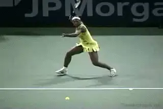
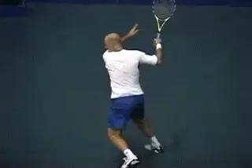
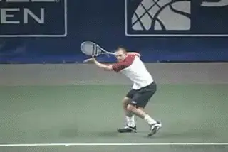
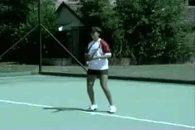
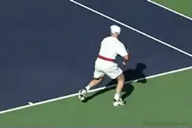
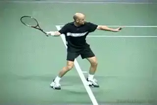
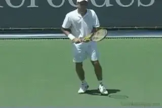
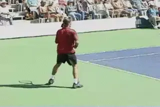

Contact Moves: The Step Down¶
David Bailey
Tennis is a game of steps, stops, stances, and moves. Footwork and balance create the foundation for a reliable swing and good contact with the tennis ball. In a fully developed player, footwork patterns, directional changes, shot execution, and recovery all merge to become flowing, instinctive, and efficient.

Pro Contact Moves: Two Foot Pivot, Lateral Transfer, and the Mogul Move.
I have spent the past 15 years researching the steps and movements in professional tennis. When I met John Yandell several years ago, I began studying the film resources he had developed, which allowed me to test, validate and improve my understanding, looking frame by frame at the movement of the top pros. These articles present the results of some of this work, focusing on the concept of the Contact Move.

We need to go beyond the basic hitting stances.
Most coaches and players believe there are 3 basic hitting stances in tennis: neutral, open, and closed. What my research shows however is that the movement of the feet during the contact phase is more complex and dynamic than those simple distinctions. This is because players move their feet before, during and after the contact, and do this is in very specific ways depending on the ball they are hitting, how far they moved to hit, and what they are trying to do with the shot.
To really understand what happens with footwork during the strokes, we need to go beyond the static concept of \"hitting stance.\" This is why I developed the concept of the \"Contact Move.\"
The Contact Move allows players and coaches to understand what happens with the best players in the world. It also shows them what players at all levels need to do to develop world class footwork.

How do we make sense of all the dynamic footwork elements in tennis?
Unlike the static concept of the hitting stance, the Contact Move includes all the dynamic elements that occur with your feet when you hit the tennis ball.
These are:
-
the set up before the hit, including the stance
-
the movement of the feet during and through the contact
-
and then, the movement after the hit to re-establish balance and set the stage for recovery for the next shot.
In my research I have identified as many as 15 different Contact Moves that the top players use in different situations at different times, covering all aspects of baseline play. Many are new terms with names that may seem exotic, like the Forward Transfer, the Two Foot Pivot, and the Mogul Move.
They sound strange only because they have never been fully recognized or analyzed--until now. My articles on Tennisplayer will introduce these Contact Moves, teach you to develop them for yourself, and when to use them.
The step down into the court and into the shot.
3 Categories
Basically, we can divide the Contact Moves into 3 categories. These are Offensive, Neutral, and Defensive, depending on where the player is on the court, the type of ball he is dealing with, and the type of shot he plans to hit.
We will begin our study by looking at the Offensive Contact Moves for the forehand. In this first article start with the most basic offensive move, what I call the Step Down. The Step Down means that the player steps into the shot with the front foot and a neutral stance, what I like to call \"stepping down the court.\"
The Step Down is a core Contact Move for club players. This is because they play more balls at lower contact heights. But it is used by high level players as well when the ball is short, or when they want to stand in and hit the ball on the rise. Players use the Step Down in the center of the court, but also when they are moving 2, 3, or 4 steps sideways or forward to the ball.

Ready steps--even pros use them when there is time.
Although the Step Down includes a step forward into the shot, it is more complex than what we think of as a simple neutral stance. There are several components to the Step Down that aren't usually recognized.
So, let's take a look at how it works. We'll start with the simplest Step Down examples and then go forward from there. In future articles we'll also examine the rest of the Offensive Contact Moves. Then we'll move on to Neutral and Defensive Contact Moves, covering the entire range of professional footwork.
This first article may seem relatively straight forward, and it is, but it also lays the conceptual foundation for understanding pro tennis in a new way as we begin to examine the varied and complex patterns of movements that are used by elite players.

The basic Step Down: a sideways out step and a step down to the ball.
Ready Steps
Although you see it only occasionally in pro tennis, I think that as players are learning the Contact Moves, they should begin by taking what I call ready steps. When pro players have a few extra split seconds between shots you will actually see them do this as well. The Ready steps are then followed by the Split Step, and from there the players initiate the movement to the ball.
Neutral Stance Variations
Usually players and coaches think neutral stance hitting is as simple as turn, step and hit. In reality, there are 3 different types of footwork that players use with the Step Down before stepping into the shot, depending on how far they must move.
There are also 2 different Balance Moves. The balances moves are made with the rear foot. Which balance move a player uses depends on the height of the ball.

Andre Agassi demonstrates a complete Step Down sequence.
The balance moves are followed by recovery steps. The recovery steps will also vary and can include both cross over and shuffle steps, depending how far the player has moved to the ball.
So let's see how the components of the Step Down work together. In the simplest pattern, the player initiates the movement with a step out or sideways step with the right foot, and a body turn. The left arm goes across and the racket goes upward toward the top of the backswing.
From this position the player then steps down the court into the shot. The weight stays primarily on the back foot until the step with the front foot.

On a low ball, the back knee drops. On a high ball, the back leg kicks back.
This basic pattern is rare in pro tennis. You see it mainly in the warm ups, as shown in the first Agassi animation. In point play, the step sideways is usually followed by one or two more steps, either a small additional step to the side, or a step forward, as we will see below.
But this simple step out pattern is the easiest way to learn when you are taking lessons or working on the ball machine.
The Balance Move
The Step Down is followed by a Balance Move. There are two variations here depending on the ball height. If the ball is low, the player will drop the back knee down for balance keeping it bent and close to the court.
After the balance move, the recovery begins. It is important to note the timing of the recovery however, which begins only after the player finishes the swing.

Recovery: a step around, then cross steps or shuffle steps.
After the swing, the player takes a recovery step with right rear leg. The leg comes around at up to about a 45 degree angle. From here the player can now cross step or slide step back to recover, squaring his hips as soon as possible to anticipate the opponent's next shot. I encourage players to use the cross step as much as possible because I feel it is faster than shuffle steps alone.
With the lower ball, we saw the balance move involves dropping the rear leg. If the ball is higher, however, the balance move with the rear leg changes. Instead of dropping the back knee, the player will actually kick the back leg back and away from the hit. At the same time he will keep the weight on the front foot, which stays in contact with the court. We'll see how this can change depending on the circumstance in future articles.
As with the first type of balance move, the kick back is followed by the recovery footwork pattern. The player finishes the swing. The right rear leg comes around at a 45 degree angle. Then the players cross steps or shuffles step back toward the center and squares the hips to react to the next ball.

Rhythm Steps: a step out, a shuffle, a second step, then a step down.
When the player has to travel further to the ball, there are two variations in the step out patterns. The first is what I call Rhythm Steps. This is basically a two step move prior to the Step Down. The second is a three step move, what I like to the call the \"Cha Cha Cha.\"
The Rhythm Step pattern consists of is of a step out with the outside or right foot, followed by a small sliding step with the left foot, and then a second step behind the ball with the right foot.
Rhythm Steps can be followed by either of the two balance moves we saw above. If the ball is low, the player will bend and lower the back leg. If it's higher the balance move will be a kick back away from the shot with the back foot.
In either case, the same pattern of recovery footwork applies. The step forward and around at 45 degrees, and then the crossover and/or shuffle back to a neutral position.

[The Cha Cha Cha: a step out, a step across, then a step behind the ball.]
Cha Cha Cha
The third step out option is what I like to call \"Cha Cha Cha Steps.\" It's basically a three step pattern to reach and set up behind the ball. The Cha Cha Cha starts with a step out with the right foot. This is followed by a step forward and across with the left foot. The third step is another step outward with the left foot. So that's 3 steps: right, left, right, or \"Cha Cha Cha.\" Now the player takes the step down the court into the ball. He finishes the swing, and after the hit, using the recovery footwork pattern we have seen above.
So that's it for the Step Down or the most basic form of aggressive footwork. We've seen 3 different variations in the the initial steps depending on how far you move to the ball, and 2 different balance moves, depending on ball height.
As I said, the top players use the Step Down when they want to step in on a short or floating ball, or when they are hitting the ball on the rise. But these patterns are critical for the club players to master because in general they play rally balls at mostly lower contact heights and with less extreme side to side movement.
Next we'll start to look at the other more advanced forms of aggressive footwork that are more common in the pros. Stay Tuned.

David Bailey is a native Australian who has spent 15 years studying tennis at the professional level. He has developed a new language for one of the most complex and misunderstood aspects of the game, footwork and court movement. David has worked with world class players and coaches, national tennis associations and top academies, and has presented at coaching seminars around the world. His teaching system, the Bailey Method, has become a regular part of the coaching curriculum at the Nick Bollettierri Tennis Academy, where it is personally endorsed by Nick
Visit David's Website! [!]
To Contact David directly [!]